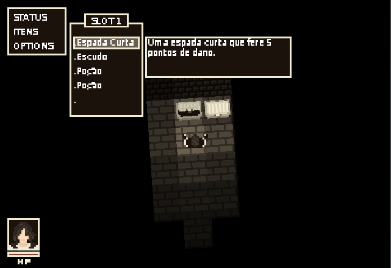

Inspirado em jogos como Doom e Diablo, Dungeon Slayer é um jogo estilo dungeoncrowler clássico.
O jogo narra a jornada de um jovem que vive num mundo dominado pelo mal. Seu objetivo é atravessar a grande masmorra de
Israd e derrotar o lich que é a fonte de todo o mal em seu mundo.